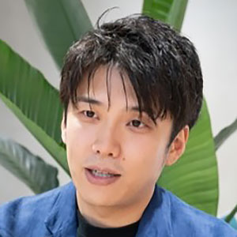

気がついたらプロダクトマネージャーになっていた話。自身のNature Remoというプロダクトを通じての実体験について。
発表資料
当日のツイートまとめ (togetter)
「#pmconfjp 2018 まとめ Part.15 「気がついたらプロダクトマネージャーになっていた」」をトゥギャりました。 https://t.co/PvLGFVC83d
— pmconf プロダクトマネージャー・カンファレンス (@pmconfjp) November 7, 2018

登壇者プロフィール
2008年にスウェーデン王立工科大学にてComputer Scienceの修士課程を修了、その後3ヶ月間小さなヨットで生活。2008年から2014年迄の6年間、三井物産で米ITベンチャーの投資管理から東南アジアの電力事業開発までを経験。2016年ハーバード大学MBA課程を修了。ハーバード大在学中にNatureを立ち上げる。